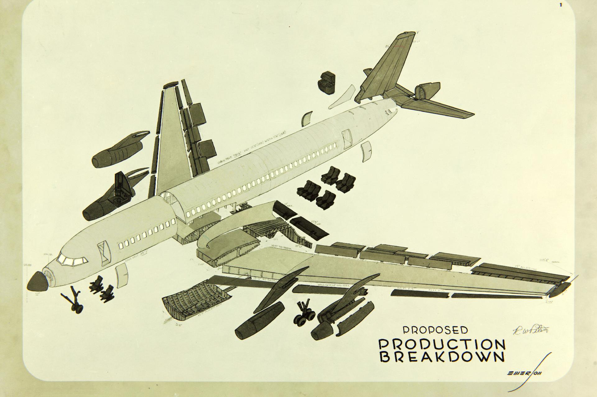
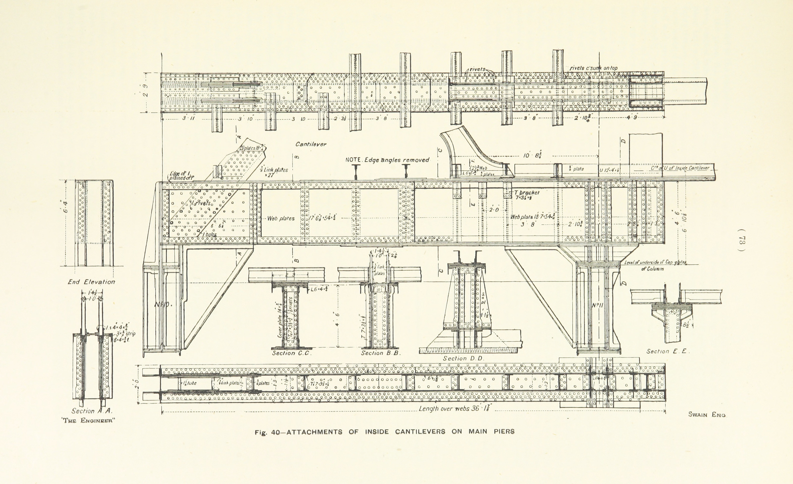

Document Kit
Example document
01. Executive Summary
An introduction
'Yes, but some crumbs must have got in as well,' the Hatter grumbled: 'you shouldn't have put it in with the bread-knife.'
The March Hare took the watch and looked at it gloomily: then he dipped it into his cup of tea, and looked at it again: but he could think of nothing better to say than his first remark, 'It was the BEST butter, you know.'
Alice had been looking over his shoulder with some curiosity. 'What a funny watch!' she remarked. 'It tells the day of the month, and doesn't tell what o'clock it is!'
'Why should it?' muttered the Hatter. 'Does YOUR watch tell you what year it is?'
'Of course not,' Alice replied very readily: 'but that's because it stays the same year for such a long time together.'
'Which is just the case with MINE,' said the Hatter.
Alice felt dreadfully puzzled. The Hatter's remark seemed to have no sort of meaning in it, and yet it was certainly English. 'I don't quite understand you,' she said, as politely as she could.
'The Dormouse is asleep again,' said the Hatter, and he poured a little hot tea upon its nose.
The Dormouse shook its head impatiently, and said, without opening its eyes, 'Of course, of course; just what I was going to remark myself.'
'Have you guessed the riddle yet?' the Hatter said, turning to Alice again.
02. A section
Here's what we did
The weather, which had hitherto been fine, changed with the last quarter of the moon. The sea rolled heavily, and the wind at intervals rose almost to a storm, but happily blew from the south-west, and thus aided the steamer's progress. The captain as often as possible put up his sails, and under the double action of steam and sail the vessel made rapid progress along the coasts of Anam and Cochin China. Owing to the defective construction of the Rangoon, however, unusual precautions became necessary in unfavourable weather; but the loss of time which resulted from this cause, while it nearly drove Passepartout out of his senses, did not seem to affect his master in the least. Passepartout blamed the captain, the engineer, and the crew, and consigned all who were connected with the ship to the land where the pepper grows. Perhaps the thought of the gas, which was remorselessly burning at his expense in Saville Row, had something to do with his hot impatience.
"You are in a great hurry, then," said Fix to him one day, "to reach Hong Kong?"
"A very great hurry!"
"Mr. Fogg, I suppose, is anxious to catch the steamer for Yokohama?"
"Terribly anxious."
"You believe in this journey around the world, then?"
"Absolutely. Don't you, Mr. Fix?"
"I? I don't believe a word of it."
03. Another section
'Speak English!' said the Eaglet. 'I don't know the meaning of half those long words, and, what's more, I don't believe you do either!' And the Eaglet bent down its head to hide a smile: some of the other birds tittered audibly.
'What I was going to say,' said the Dodo in an offended tone, 'was, that the best thing to get us dry would be a Caucus-race.'
'What IS a Caucus-race?' said Alice; not that she wanted much to know, but the Dodo had paused as if it thought that SOMEBODY ought to speak, and no one else seemed inclined to say anything.
'Why,' said the Dodo, 'the best way to explain it is to do it.' (And, as you might like to try the thing yourself, some winter day, I will tell you how the Dodo managed it.)
First it marked out a race-course, in a sort of circle, ('the exact shape doesn't matter,' it said,) and then all the party were placed along the course, here and there. There was no 'One, two, three, and away,' but they began running when they liked, and left off when they liked, so that it was not easy to know when the race was over. However, when they had been running half an hour or so, and were quite dry again, the Dodo suddenly called out 'The race is over!' and they all crowded round it, panting, and asking, 'But who has won?'
This question the Dodo could not answer without a great deal of thought, and it sat for a long time with one finger pressed upon its forehead (the position in which you usually see Shakespeare, in the pictures of him), while the rest waited in silence. At last the Dodo said, 'EVERYBODY has won, and all must have prizes.'
'But who is to give the prizes?' quite a chorus of voices asked.
Here is an embedded item of media
A subsection of content
1. "Why did you call him Tortoise, if he wasn't one?"
'When we were little,' the Mock Turtle went on at last, more calmly, though still sobbing a little now and then, 'we went to school in the sea. The master was an old Turtle—we used to call him Tortoise—'
'Why did you call him Tortoise, if he wasn't one?' Alice asked.
'We called him Tortoise because he taught us,' said the Mock Turtle angrily: 'really you are very dull!'
'You ought to be ashamed of yourself for asking such a simple question,' added the Gryphon; and then they both sat silent and looked at poor Alice, who felt ready to sink into the earth. At last the Gryphon said to the Mock Turtle, 'Drive on, old fellow! Don't be all day about it!' and he went on in these words:
'Yes, we went to school in the sea, though you mayn't believe it—'
'I never said I didn't!' interrupted Alice.
'You did,' said the Mock Turtle.
'Hold your tongue!' added the Gryphon, before Alice could speak again. The Mock Turtle went on.
2. The Exodus from London
It was like riding into the smoke of a fire to approach the meeting point of the lane and road; the crowd roared like a fire, and the dust was hot and pungent. And, indeed, a little way up the road a villa was burning and sending rolling masses of black smoke across the road to add to the confusion.
Two men came past them. Then a dirty woman, carrying a heavy bundle and weeping. A lost retriever dog, with hanging tongue, circled dubiously round them, scared and wretched, and fled at my brother's threat.
So much as they could see of the road Londonward between the houses to the right was a tumultuous stream of dirty, hurrying people, pent in between the villas on either side; the black heads, the crowded forms, grew into distinctness as they rushed towards the corner, hurried past, and merged their individuality again in a receding multitude that was swallowed up at last in a cloud of dust.
"Go on! Go on!" cried the voices. "Way! Way!"
One man's hands pressed on the back of another. My brother stood at the pony's head. Irresistibly attracted, he advanced slowly, pace by pace, down the lane.
- Edgware had been a scene of confusion, Chalk Farm a riotous tumult, but this was a whole population in movement. It is hard to imagine that host. It had no character of its own. The figures poured out past the corner, and receded with their backs to the group in the lane. Along the margin came those who were on foot threatened by the wheels, stumbling in the ditches, blundering into one another.
- The carts and carriages crowded close upon one another, making little way for those swifter and more impatient vehicles that darted forward every now and then when an opportunity showed itself of doing so, sending the people scattering against the fences and gates of the villas.
3. "We must cross this strange place in order to get to the other side."
"How shall we get down?" asked Dorothy.
They found the ladder so heavy they could not pull it up, so the Scarecrow fell off the wall and the others jumped down upon him so that the hard floor would not hurt their feet. Of course they took pains not to light on his head and get the pins in their feet. When all were safely down they picked up the Scarecrow, whose body was quite flattened out, and patted his straw into shape again.
"We must cross this strange place in order to get to the other side," said Dorothy, "for it would be unwise for us to go any other way except due South."
They began walking through the country of the china people, and the first thing they came to was a china milkmaid milking a china cow. As they drew near, the cow suddenly gave a kick and kicked over the stool, the pail, and even the milkmaid herself, and all fell on the china ground with a great clatter.
Dorothy was shocked to see that the cow had broken her leg off, and that the pail was lying in several small pieces, while the poor milkmaid had a nick in her left elbow.
- "There!" cried the milkmaid angrily. "See what you have done! My cow has broken her leg, and I must take her to the mender's shop and have it glued on again. What do you mean by coming here and frightening my cow?"
- "I'm very sorry," returned Dorothy. "Please forgive us."
4. In which a slight glimpse is had of San Francisco
"I will come back to America to find him," said Phileas Fogg calmly. "It would not be right for an Englishman to permit himself to be treated in that way, without retaliating."
The detective smiled, but did not reply. It was clear that Mr. Fogg was one of those Englishmen who, while they do not tolerate duelling at home, fight abroad when their honour is attacked.
At a quarter before six the travellers reached the station, and found the train ready to depart. As he was about to enter it, Mr. Fogg called a porter, and said to him: "My friend, was there not some trouble to-day in San Francisco?"
"It was a political meeting, sir," replied the porter.
"But I thought there was a great deal of disturbance in the streets."
"It was only a meeting assembled for an election."
"The election of a general-in-chief, no doubt?" asked Mr. Fogg.
5. "A fine day, your Majesty!"
'Just about as much right,' said the Duchess, 'as pigs have to fly; and the m—'
But here, to Alice's great surprise, the Duchess's voice died away, even in the middle of her favourite word 'moral,' and the arm that was linked into hers began to tremble. Alice looked up, and there stood the Queen in front of them, with her arms folded, frowning like a thunderstorm.
'A fine day, your Majesty!' the Duchess began in a low, weak voice.
'Now, I give you fair warning,' shouted the Queen, stamping on the ground as she spoke; 'either you or your head must be off, and that in about half no time! Take your choice!'
The Duchess took her choice, and was gone in a moment.
'Let's go on with the game,' the Queen said to Alice; and Alice was too much frightened to say a word, but slowly followed her back to the croquet-ground.
The other guests had taken advantage of the Queen's absence, and were resting in the shade: however, the moment they saw her, they hurried back to the game, the Queen merely remarking that a moment's delay would cost them their lives.
Technical application landscape
04. Recommendations
They reached their destination on the morning of the 14th of November. Phileas Fogg lost no time in going on board the Carnatic, where he learned, to Aouda's great delight—and perhaps to his own, though he betrayed no emotion—that Passepartout, a Frenchman, had really arrived on her the day before.
Recommendation 1 We shall have to make a circuit of ten miles to the north to find a ford
The colonel launched a volley of oaths, denouncing the railway company and the conductor; and Passepartout, who was furious, was not disinclined to make common cause with him. Here was an obstacle, indeed, which all his master's banknotes could not remove.
There was a general disappointment among the passengers, who, without reckoning the delay, saw themselves compelled to trudge fifteen miles over a plain covered with snow. They grumbled and protested, and would certainly have thus attracted Phileas Fogg's attention if he had not been completely absorbed in his game.
Passepartout found that he could not avoid telling his master what had occurred, and, with hanging head, he was turning towards the car, when the engineer, a true Yankee, named Forster called out, "Gentlemen, perhaps there is a way, after all, to get over."
"On the bridge?" asked a passenger.
"On the bridge."
"With our train?"
"With our train."
Passepartout stopped short, and eagerly listened to the engineer.
Our research suggests
Ten hearers only were now left, among them honest Passepartout, who was listening with all his ears. Thus he learned that, after long persecutions, Smith reappeared in Illinois, and in 1839 founded a community at Nauvoo, on the Mississippi, numbering twenty-five thousand souls, of which he became mayor, chief justice, and general-in-chief; that he announced himself, in 1843, as a candidate for the Presidency of the United States; and that finally, being drawn into ambuscade at Carthage, he was thrown into prison, and assassinated by a band of men disguised in masks.
Passepartout was now the only person left in the car, and the Elder, looking him full in the face, reminded him that, two years after the assassination of Joseph Smith, the inspired prophet, Brigham Young, his successor, left Nauvoo for the banks of the Great Salt Lake, where, in the midst of that fertile region, directly on the route of the emigrants who crossed Utah on their way to California, the new colony, thanks to the polygamy practised by the Mormons, had flourished beyond expectations.
"And this," added Elder William Hitch, "this is why the jealousy of Congress has been aroused against us! Why have the soldiers of the Union invaded the soil of Utah? Why has Brigham Young, our chief, been imprisoned, in contempt of all justice? Shall we yield to force? Never! Driven from Vermont, driven from Illinois, driven from Ohio, driven from Missouri, driven from Utah, we shall yet find some independent territory on which to plant our tents. And you, my brother," continued the Elder, fixing his angry eyes upon his single auditor, "will you not plant yours there, too, under the shadow of our flag?"
"No!" replied Passepartout courageously, in his turn retiring from the car, and leaving the Elder to preach to vacancy.
Related programmes:
'You're wrong about the crumbs,' said the Mock Turtle: 'crumbs would all wash off in the sea. But they HAVE their tails in their mouths; and the reason is—' here the Mock Turtle yawned and shut his eyes.—'Tell her about the reason and all that,' he said to the Gryphon.
'The reason is,' said the Gryphon, 'that they WOULD go with the lobsters to the dance. So they got thrown out to sea. So they had to fall a long way. So they got their tails fast in their mouths. So they couldn't get them out again. That's all.'
'Thank you,' said Alice, 'it's very interesting. I never knew so much about a whiting before.'
'I can tell you more than that, if you like,' said the Gryphon. 'Do you know why it's called a whiting?'
'I never thought about it,' said Alice. 'Why?'
'IT DOES THE BOOTS AND SHOES.' the Gryphon replied very solemnly.
Alice was thoroughly puzzled. 'Does the boots and shoes!' she repeated in a wondering tone.
'Why, what are YOUR shoes done with?' said the Gryphon. 'I mean, what makes them so shiny?'
Recommendation 2 He realised something of the full power and terror of these monsters
The Martians, alarmed by the approach of a crowd, had killed a number of people with a quick-firing gun, so the story ran. The telegram concluded with the words: "Formidable as they seem to be, the Martians have not moved from the pit into which they have fallen, and, indeed, seem incapable of doing so. Probably this is due to the relative strength of the earth's gravitational energy." On that last text their leader-writer expanded very comfortingly.
My brother felt no anxiety about us, as he knew from the description in the papers that the cylinder was a good two miles from my house. He made up his mind to run down that night to me, in order, as he says, to see the Things before they were killed. He dispatched a telegram, which never reached me, about four o'clock, and spent the evening at a music hall.
In London, also, on Saturday night there was a thunderstorm, and my brother reached Waterloo in a cab. On the platform from which the midnight train usually starts he learned, after some waiting, that an accident prevented trains from reaching Woking that night. The nature of the accident he could not ascertain; indeed, the railway authorities did not clearly know at that time. There was very little excitement in the station, as the officials, failing to realise that anything further than a breakdown between Byfleet and Woking junction had occurred, were running the theatre trains which usually passed through Woking round by Virginia Water or Guildford. They were busy making the necessary arrangements to alter the route of the Southampton and Portsmouth Sunday League excursions. A nocturnal newspaper reporter, mistaking my brother for the traffic manager, to whom he bears a slight resemblance, waylaid and tried to interview him. Few people, excepting the railway officials, connected the breakdown with the Martians.
Our research suggests:
Then it was, and then only, that he realised something of the full power and terror of these monsters. He learned that they were not merely a handful of small sluggish creatures, but that they were minds swaying vast mechanical bodies; and that they could move swiftly and smite with such power that even the mightiest guns could not stand against them.
They were described as "vast spiderlike machines, nearly a hundred feet high, capable of the speed of an express train, and able to shoot out a beam of intense heat." Masked batteries, chiefly of field guns, had been planted in the country about Horsell Common, and especially between the Woking district and London. Five of the machines had been seen moving towards the Thames, and one, by a happy chance, had been destroyed. In the other cases the shells had missed, and the batteries had been at once annihilated by the Heat-Rays. Heavy losses of soldiers were mentioned, but the tone of the dispatch was optimistic.
The Martians had been repulsed; they were not invulnerable. They had retreated to their triangle of cylinders again, in the circle about Woking. Signallers with heliographs were pushing forward upon them from all sides. Guns were in rapid transit from Windsor, Portsmouth, Aldershot, Woolwich--even from the north; among others, long wire-guns of ninety-five tons from Woolwich. Altogether one hundred and sixteen were in position or being hastily placed, chiefly covering London. Never before in England had there been such a vast or rapid concentration of military material.
Any further cylinders that fell, it was hoped, could be destroyed at once by high explosives, which were being rapidly manufactured and distributed. No doubt, ran the report, the situation was of the strangest and gravest description, but the public was exhorted to avoid and discourage panic. No doubt the Martians were strange and terrible in the extreme, but at the outside there could not be more than twenty of them against our millions.
Related programmes:
Among these were a couple of cyclists, a jobbing gardener I employed sometimes, a girl carrying a baby, Gregg the butcher and his little boy, and two or three loafers and golf caddies who were accustomed to hang about the railway station. There was very little talking. Few of the common people in England had anything but the vaguest astronomical ideas in those days. Most of them were staring quietly at the big table like end of the cylinder, which was still as Ogilvy and Henderson had left it.
05. Appendices
Appendix A: User journeys
The four travelers walked with ease through the trees until they came to the farther edge of the wood. Then, to their surprise, they found before them a high wall which seemed to be made of white china. It was smooth, like the surface of a dish, and higher than their heads.
"What shall we do now?" asked Dorothy.
"I will make a ladder," said the Tin Woodman, "for we certainly must climb over the wall."
While the Woodman was making a ladder from wood which he found in the forest Dorothy lay down and slept, for she was tired by the long walk. The Lion also curled himself up to sleep and Toto lay beside him.
The Scarecrow watched the Woodman while he worked, and said to him:
"I cannot think why this wall is here, nor what it is made of."
"Rest your brains and do not worry about the wall," replied the Woodman. "When we have climbed over it, we shall know what is on the other side."
After a time the ladder was finished. It looked clumsy, but the Tin Woodman was sure it was strong and would answer their purpose. The Scarecrow waked Dorothy and the Lion and Toto, and told them that the ladder was ready. The Scarecrow climbed up the ladder first, but he was so awkward that Dorothy had to follow close behind and keep him from falling off. When he got his head over the top of the wall the Scarecrow said, "Oh, my!"
Appendix B: User personas
He gave a cry of terror, sprang sideways, and rushed on before I could gather my wits sufficiently to speak to him. So heavy was the stress of the storm just at this place that I had the hardest task to win my way up the hill. I went close up to the fence on the left and worked my way along its palings.
Near the top I stumbled upon something soft, and, by a flash of lightning, saw between my feet a heap of black broadcloth and a pair of boots. Before I could distinguish clearly how the man lay, the flicker of light had passed. I stood over him waiting for the next flash. When it came, I saw that he was a sturdy man, cheaply but not shabbily dressed; his head was bent under his body, and he lay crumpled up close to the fence, as though he had been flung violently against it.
Overcoming the repugnance natural to one who had never before touched a dead body, I stooped and turned him over to feel for his heart. He was quite dead. Apparently his neck had been broken. The lightning flashed for a third time, and his face leaped upon me. I sprang to my feet. It was the landlord of the Spotted Dog, whose conveyance I had taken.
I stepped over him gingerly and pushed on up the hill. I made my way by the police station and the College Arms towards my own house. Nothing was burning on the hillside, though from the common there still came a red glare and a rolling tumult of ruddy smoke beating up against the drenching hail. So far as I could see by the flashes, the houses about me were mostly uninjured. By the College Arms a dark heap lay in the road.
Down the road towards Maybury Bridge there were voices and the sound of feet, but I had not the courage to shout or to go to them. I let myself in with my latchkey, closed, locked and bolted the door, staggered to the foot of the staircase, and sat down. My imagination was full of those striding metallic monsters, and of the dead body smashed against the fence.
I crouched at the foot of the staircase with my back to the wall, shivering violently.
I have already said that my storms of emotion have a trick of exhausting themselves. After a time I discovered that I was cold and wet, and with little pools of water about me on the stair carpet. I got up almost mechanically, went into the dining room and drank some whiskey, and then I was moved to change my clothes.
After I had done that I went upstairs to my study, but why I did so I do not know. The window of my study looks over the trees and the railway towards Horsell Common. In the hurry of our departure this window had been left open. The passage was dark, and, by contrast with the picture the window frame enclosed, the side of the room seemed impenetrably dark. I stopped short in the doorway.